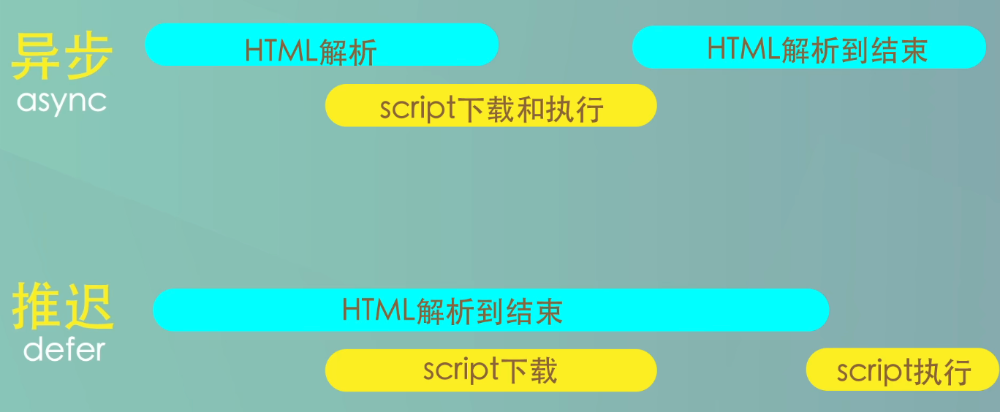

世界上第一个浏览器是什么？
世界上第一个浏览器是由蒂姆·伯纳斯-李（Tim Berners-Lee）在1990年开发的，它被称为WorldWideWeb（万维网）或简称为WWW。这个浏览器最初是为了在CERN（欧洲核子研究组织）内部共享和浏览文档而创建的。
WorldWideWeb浏览器是基于NeXTSTEP操作系统开发的，它提供了一种简单的方式来浏览和导航互联网上的超文本文档。它支持通过URL链接访问不同的文档，并使用超文本标记语言（HTML）来描述和呈现文档内容。
蒂姆·伯纳斯-李还发明了URL（统一资源定位符）、HTML（超文本标记语言）和HTTP（超文本传输协议），这些技术共同奠定了现代互联网的基础。
尽管WorldWideWeb浏览器在当时是一种先驱，但它为后来的浏览器发展奠定了基础，并成为了今天我们所熟知的互联网浏览器的起点。
浏览器发展史
1990：WorldWideWeb（万维网）或简称为WWW
1993：Mosaic 诞生，也就是后面大名鼎鼎的网景浏览器（Netscape）
1995：微软推出 IE（第一次浏览器大战正式打响）
2003 苹果公司推出 Safari，并于 2005年发起开源项目 Webkit
2004 年 Firefox 1.0 发布（网景公司主导开发），拉开了第二次浏览器大战的序幕
2008年 Google 公司以 webkit 作为内核，创建了一个新的项目 Chromium，在其基础上，发布了 Chrome 浏览器
（Chromium本身就是一个浏览器，而不是 Chrome 浏览器的内核，Chrome 浏览器一般选择 Chromium 的稳定版本作为它的基础）
浏览器核心组成
外壳（用户界面）
持久化存储器（磁盘，记忆功能）
浏览器引擎
js 引擎
css 引擎
c++ 绘制模块
网络
…
浏览器内核分类
浏览器内核。通常，它也被称为渲染引擎。
浏览器的渲染引擎就是能够将HTML/CSS/JavaScript文本及其相应的资源文件转换成图像结果的模块
IE: Trident
Firefox: Gecko
Chrome: webkit，现在是 blink 内核
Safari: webkit
opera: webkit，现在是 blink 内核
WebKit：最初由苹果公司开发，用于Safari浏览器。它也被其他浏览器采用和修改，如Google Chrome（基于Blink）和Opera。
Blink：2013年，Google宣布了Blink内核，它其实是从WebKit复制出去的。渲染引擎 Blink 最初是基于WebKit，后来独立出来。目前主要用于Google Chrome、Opera和其他一些基于Chromium的浏览器。
Gecko：由Mozilla开发的渲染引擎，用于Firefox浏览器。
Trident：由Microsoft开发的渲染引擎，曾用于Internet Explorer浏览器。
EdgeHTML：由Microsoft开发的渲染引擎，用于旧版Microsoft Edge浏览器。然而，自2020年起，Microsoft Edge已经切换到基于Chromium的Blink引擎。
Presto：由Opera Software开发的渲染引擎，曾用于旧版Opera浏览器。
WebKit 是什么？
WebKit是一个开源的浏览器引擎，最初由苹果公司开发，并用于其Safari浏览器。它是一个负责解析HTML、CSS和JavaScript的核心组件，实现了浏览器的渲染功能。
WebKit具有高度模块化的架构，包括多个子模块，如HTML解析器、CSS解析器、JavaScript引擎等。它负责将网页的原始代码转换为可视化的内容，以供用户在浏览器中查看和与之交互。
由于WebKit的开源性质，它不仅被苹果用于Safari浏览器，还被其他浏览器采用和修改。其中最著名的例子是Google Chrome浏览器，它使用了基于WebKit的渲染引擎Blink。
WebKit嵌入式接口 是指的狭义WebKit，它指的是在WebCore（包含HTML解释器、CSS解释器和布局等模块）和 JavaScript引擎 之上的一层绑定和嵌入式编程接口，可以被各种浏览器调用。(目前DOM和JavaScript引擎是分开的，这意味着JavaScript引擎访问DOM树需要较高的代价)
渲染引擎主要包含哪些功能模块？
html 解释器：将HTML文本解释成DOM（文档对象模型）树
css 解释器：级联样式表的解释器，它的作用是为DOM中的各个元素对象计算出样式信息
layout （布局）：在DOM Tree 和 CSSOM tree 创建之后，Webkit需要将其中的元素对象同样式信息结合起来，计算它们的大小位置等布局信息，形成一个能够表示这所有信息的内部表示模型。
计算布局的主要目的是确定页面中每个元素的几何属性，如大小、位置、边距等，并创建一个准确的布局流（Layout Flow）。计算布局是为了最终在屏幕上正确呈现和定位每个元素，以及保持它们之间的关系和相互作用。
js 引擎：JavaScript引擎能够解释JavaScript代码并通过DOM接口和CSSOM接口来修改网页内容和样式信息，从而改变渲染的结果
绘图：使用图形库将
布局计算后的各个网页的节点绘制成图像结果
渲染引擎的功能模块如何协同工作的？
url 请求到了网页内容
拿到 html 文本（字符串）后输入到HTML解释器，HTML解释器在解释它后构建成一棵 DOM树
这期间如果遇到JavaScript代码则交给JavaScript引擎去处理
如果网页中包含CSS，则交给CSS解释器去解释，形成 CSSOM Tree
当 DOM Tree 和 CSSOM Tree 都构建完后，渲染引擎调用 布局模块(layout) 计算模型内部各个元素的位置和大小信息，形成 render tree。（也称为回流（Reflow）或排版（Layout）过程。）
绘制模块 负责将渲染树中的每个元素转换为实际的像素。它会根据元素的样式属性，如颜色、背景、边框等，以及元素的几何属性，如位置、大小等，将元素绘制成位图或矢量图形。绘制过程包括填充像素颜色、边框描边、渐变填充、阴影效果等。
绘图这一环节是由计算机的图形处理单元（Graphics Processing Unit，GPU）完成的。
GPU 是与 CPU 并行工作的独立处理器，其主要设计目标是提供高效的图形渲染和处理能力。
合成模块负责将绘制好的图像元素按照正确的顺序合成到屏幕上。它将渲染树中的各个元素按照层叠关系进行合成，处理透明度、混合模式等效果，以及处理层级关系、裁剪等操作。
最终，合成模块将合成的图像发送给操作系统，以显示在屏幕上。
合并 render tree 的过程
浏览器将 DOM 树和 CSSOM 树合并成渲染树（Render Tree）的过程是由渲染引擎中的布局（Layout）模块完成的，也称为回流（Reflow）或排版（Layout）过程。
渲染引擎中的布局模块负责确定页面上每个元素的大小、位置和几何属性。它会遍历渲染树，并计算每个元素在视口中的确切位置和大小，考虑盒模型、浮动、定位、文本流等因素，以及应用 CSS 属性对元素的影响。
在合并渲染树的过程中，布局模块会执行以下操作：
- 从根节点开始遍历
（深度优先遍历）渲染树。 - 对每个可见的元素，根据其样式和盒模型属性计算其几何属性（如宽度、高度、位置等）。
- 考虑元素之间的关系（如浮动、定位、文本流等），计算它们在视口中的精确位置。
- 创建布局流（Layout Flow）来确保元素按正确的顺序绘制在屏幕上。
Webkit 渲染过程
分为三个过程：
从网页的 URL 到构建 DOM 树
从DOM树到构建完WebKit的绘图上下文
从绘图上下文到生成最终的图像
js 代码的执行为什么会阻塞 DOM树和 CSSOM tree 的构建呢？
JavaScript 代码执行会阻塞 DOM 树（文档对象模型）和 CSSOM 树（CSS 对象模型）的构建，这是因为浏览器的渲染引擎在解析 HTML、CSS 和执行 JavaScript 时是按顺序执行的。
当浏览器解析 HTML 代码时，遇到 <script> 标签时会立即加载并执行其中的 JavaScript 代码。如果 JavaScript 代码需要访问或修改 DOM 元素，它需要在构建完成的 DOM 树上进行操作。因此，浏览器会阻塞 DOM 树的构建，直到 JavaScript 代码执行完毕。
类似地，如果 JavaScript 代码需要访问或修改 CSS 样式信息，它需要在构建完成的 CSSOM 树上进行操作。因此，浏览器会阻塞 CSSOM 树的构建，直到 JavaScript 代码执行完毕。
这种阻塞行为会导致页面加载和渲染的延迟，特别是在 JavaScript 代码较大或执行时间较长时。因此，在开发过程中，我们需要注意优化 JavaScript 代码，以减少其对 DOM 和 CSSOM 构建的阻塞影响。
有几种方式可以减轻 JavaScript 对 DOM 和 CSSOM 构建的阻塞效应：
异步加载 JavaScript：将 JavaScript 代码放置在
<script>标签中的async或defer属性中。这样可以使 JavaScript 代码异步加载，不会阻塞 DOM 和 CSSOM 的构建，从而提高页面加载性能。(当<script>标签添加了 defer 属性后，JavaScript 代码将在 HTML 解析完毕后执行，但在 DOMContentLoaded 事件之前执行。)放置 JavaScript 代码的位置：将 JavaScript 代码放置在页面底部，或使用延迟加载，以使其在 DOM 和 CSSOM 构建完成后执行。
代码优化：优化 JavaScript 代码，减少不必要的计算和操作，以提高执行效率。可以使用工具进行代码压缩和合并，减小文件大小，从而减少下载和执行时间。
Web Workers：使用 Web Workers 可以将耗时的 JavaScript 代码放在后台线程中执行，以避免阻塞主线程，从而提高页面的响应性能。
需要注意的是，尽管 JavaScript 代码的执行会阻塞 DOM 树和 CSSOM 树的构建，但它不会阻塞其他资源的加载，如图片、样式表和字体文件等。浏览器会并行加载这些资源，以提高页面加载的效率。
异步任务不会阻塞 DOM 树和 CSSOM树的构建
异步任务如 setTimeout 和 Promise 的回调函数会在构建完 DOM 树和 CSSOM 树之后执行。
当浏览器遇到 setTimeout 或 Promise 等异步操作时，它会将相应的回调函数添加到任务队列中，等待执行。这些回调函数属于宏任务或微任务，具体取决于异步操作的类型。
一旦浏览器完成构建 DOM 树和 CSSOM 树的过程，会检查是否存在微任务队列。如果存在微任务，浏览器会优先执行微任务队列中的任务，然后再执行宏任务队列中的任务。这样可以确保微任务优先于下一个渲染步骤执行，保证页面更新的即时性。
输入 URL 到显示整个页面
当你在浏览器中输入一个 URL 并按下回车键后，会发生以下一系列步骤，以加载并显示整个页面：
URL 解析：浏览器首先解析输入的 URL，提取出协议（如 HTTP、HTTPS）、主机名（如 www.example.com）和路径等信息。
DNS 解析：浏览器将主机名发送给 DNS（域名系统）服务器，以获取主机名对应的 IP 地址。这是为了建立与目标服务器的网络连接。
建立网络连接：使用获取到的 IP 地址，浏览器与目标服务器建立 TCP 连接。这是通过三次握手（SYN、SYN-ACK、ACK）实现的。
发送 HTTP 请求：一旦建立了 TCP 连接，浏览器会发送一个 HTTP 请求到目标服务器，该请求包括请求行、请求头和请求体。请求行中包含了请求的方法（如 GET、POST）、路径和 HTTP 版本。
服务器处理请求：目标服务器接收到浏览器发送的 HTTP 请求后，会进行相应的处理。这可能涉及到服务器端的应用程序、数据库查询等操作。
返回 HTTP 响应：服务器处理完请求后，会生成一个 HTTP 响应，包括响应行、响应头和响应体。响应行中包含了状态码（如 200 OK、404 Not Found）和 HTTP 版本。
接收响应：浏览器接收到服务器发送的 HTTP 响应后，开始接收响应的数据。
解析 HTML：一旦浏览器接收到响应的数据，它会根据响应头中的内容类型（通常为 text/html）确定响应主体中的数据是 HTML。然后，浏览器会解析 HTML，构建 DOM 树。
解析 CSS：在解析 HTML 的过程中，如果遇到外部 CSS 样式表或内联样式（
<style>标签），浏览器会同时解析 CSS，并构建 CSSOM 树。渲染页面：基于构建好的 DOM 树和 CSSOM 树，浏览器开始渲染页面，并确定每个元素在屏幕上的位置和外观。
下载其他资源：在渲染页面的过程中，浏览器会发现页面中引用的其他资源，如图片、脚本文件、样式表等。它会并行下载这些资源，以便后续使用。
执行 JavaScript：如果页面中存在 JavaScript 代码（内联或外部脚本文件），浏览器会执行这些代码。执行过程中可能会产生异步任务，如定时器、事件回调等。
页面加载完成：当所有资源都被下载、解析和执行完毕，并且 DOM 树和 CSSOM 树构建完成后，页面加载完成。
HTML解释器 解释过程
HTML解释器的工作就是将网络或者本地磁盘获取的HTML网页和资源从字节流解释成DOM树结构。
简单描述如下：
首先是字节流（资源管理器请求过来），经过解码之后是字符流，然后通过词法分析器会被解释成 词法单元(Tokens)，之后经过语法分析器构建成节点，最后这些节点被组建成一棵DOM树。
HTML解释器的解释过程可以分为以下几个步骤：
词法分析（Lexical Analysis）：HTML解释器首先进行词法分析，将HTML代码分解为一系列的
词法单元（Tokens）。词法单元包括标签、属性、文本等，每个词法单元都具有特定的含义和类型。语法分析（Syntax Analysis）：在语法分析阶段，解释器根据HTML的语法规则，将词法单元组织成一个语法树（Syntax Tree）。
语法树反映了HTML文档的结构和层次关系，它由一系列的语法节点构成。构建DOM树（DOM Construction）：在构建DOM树的过程中，解释器遍历语法树的节点，并根据节点的类型和属性信息，创建相应的DOM节点对象。DOM节点包括元素节点、文本节点、注释节点等。节点之间通过父子关系、兄弟关系等链接在一起，形成了完整的DOM树。
解析过程中的其他操作：在解析过程中，解释器还会进行其他操作，如处理样式表、执行脚本、处理特殊标记等。这些操作可能会触发CSS解析、脚本执行等相关的过程。
总体而言，HTML解释器通过词法分析、语法分析和DOM构建等步骤，将HTML代码解析为DOM树的结构。解析过程中，解释器会根据HTML的语法规则和标签嵌套关系，逐步构建DOM树的结构，使其能够准确地表示HTML文档的内容和结构。
1 | |
经过词法分析转换后：
1 | |
有了 Tokens，这个时候就需要 语法分析 将词法单元组织成一个 语法树:
1 | |
根节点是一个特殊的节点，通常称为DocumentNode，代表整个HTML文档。在它下面是ElementNode节点，代表HTML中的元素标签。而TextNode节点代表文本内容。
在语法树中，每个节点都代表一个语法单元，包括元素节点、文本节点等。节点之间通过父子关系、兄弟关系等链接在一起，反映了HTML文档的结构和层次关系。
DOM树
1 | |
通过 HTML Parser 转换后，形成 DOM Tree:
1 | |
解析过程：
- 解析器读取HTML代码，开始解析。
- 遇到
<!DOCTYPE html>声明，确定文档类型为HTML。 - 遇到
<html>标签，创建一个Document节点作为DOM树的根节点，并将其添加到DOM树中。 - 遇到
<head>标签，创建一个head节点，并将其作为html节点的子节点。 - 遇到
<title>标签，创建一个title节点，并将其作为head节点的子节点。 - 遇到
<body>标签，创建一个body节点，并将其作为html节点的子节点。 - 遇到
<h1>标签，创建一个h1节点，并将其作为body节点的子节点。 - 遇到文本节点”Hello, world!”，将其作为
h1节点的子节点。 - 遇到
<p>标签，创建一个p节点，并将其作为body节点的子节点。 - 遇到文本节点”This is a paragraph.”，将其作为
p节点的子节点。 - 解析完毕，生成了一个完整的DOM树。
解析器会根据HTML的语法规则和标签嵌套关系，逐步构建DOM树的结构。每个标签会被解析成一个DOM节点，文本内容会被解析成文本节点。DOM树的结构反映了HTML文档的层次结构和标签之间的嵌套关系。
通过解析器解析HTML代码，浏览器可以理解和处理HTML文档，然后根据DOM树的结构进行进一步的处理，如样式计算、布局和渲染，最终将网页内容展示给用户。
1 | |
在这个对象表示中，每个节点都是一个JavaScript对象，具有相应的属性。常见的属性包括：
- nodeType：表示节点类型，使用数字表示，例如1表示元素节点，3表示文本节点。
- nodeName：表示节点名称，对于元素节点是标签名，对于文本节点是”#text”。
- nodeValue：表示节点的值，对于文本节点是文本内容。
- childNodes：表示子节点的列表，是一个包含子节点对象的数组。
通过这样的对象表示，我们可以遍历和操作DOM树的各个节点，访问节点的属性和内容，进行节点的增删改查等操作。
html、css 和 JS 之间的阻塞问题
外链 CSS 的加载是否会阻塞 JavaScript 执行？
CSS资源还未下载完成，浏览器解析会根据标签的顺序来解析
如果JavaScript代码位于
标签中，且位于link标签之前，会立即执行这段脚本然后在CSS资源下载的过程中，浏览器会暂停HTML解析和后面的JavaScript执行，等待CSS资源下载完成后再继续。这是因为浏览器默认会按照标签的顺序进行解析和执行，确保代码的执行顺序正确。
1 | |
先 alert 文档开始解析了!，随后加载 link 资源，等待加载完成后，才会执行 alert('文档解析结束了!');。这是由于 JS 可能会获取或者改变元素的样式，所以浏览器会按照顺序，等上面的 CSS 加载解析完成之后，再执行下面的 JS 。
DOM解析和 CSS解析会相互阻塞吗？
DOM解析和CSS解析是可以并行进行的，它们之间不会相互阻塞。
当涉及到页面渲染时，DOM树和CSSOM树的合并会引起一定的阻塞。当DOM树和CSSOM树都构建完成后，浏览器会将它们合并成渲染树（Render Tree），用于计算布局和绘制页面。这个过程可能会阻塞渲染进程，因为它需要等待DOM树和CSSOM树的构建完成。
css 加载会阻塞 DOM树 的渲染
以上面例子结果来看，只有当 css 资源加载完之后，页面上才显示 h1 标签，意味着 css 加载会阻塞 DOM树 的渲染!
严格来说，是 CSS会阻塞 render tree 的生成，进而会阻塞DOM的渲染。
总结
DOM解析和CSS解析是两个并行的进程，这也是为什么CSS加载不会阻塞DOM的解析。
由于Render Tree是依赖于DOM Tree和CSSOM Tree的，所以他必须等待到CSSOM Tree构建完成，也就是CSS资源加载完成(或者CSS资源加载失败)后，才能开始渲染。因此，
CSS加载是会阻塞Dom的渲染的。由于js可能会操作之前的Dom节点和css样式，因此浏览器会维持html中css和js的顺序。因此，css 的加载会在 后面的js执行前 先加载执行。所以
css加载会阻塞后面js的执行。
script 的 async/deder 属性
- async：异步
- defer：推迟
async
异步加载，不确定何时会加载好；页面加载时，遇到带有 async 的脚本也同时加载，加载后会立即执行，如果有一些需要操作 DOM 的脚本加载比较慢时，这样会造成 DOM 还没有加载好，脚本就进行操作，会造成错误。
defer
页面加载时，带有 defer 的脚本也同时加载，加载后会等待 页面加载好后，才执行。
DOMContentLoaded
当 <script> 标签添加了 defer 属性后，JavaScript 代码将在 HTML 解析完毕后执行，但在 DOMContentLoaded 事件之前执行。
DOMContentLoaded是一个DOM事件，当初始的HTML文档 被完全加载和解析完成，而无需等待样式表、图像和子框架的完成加载时触发。简单来说，它表示文档的初始DOM结构已经构建完成。
1 | |
三次握手
三次握手是建立 TCP 连接时使用的一种协议，用于确保双方的通信能够正常进行。下面是三次握手的详细步骤：
第一次握手（SYN）：
- 客户端（浏览器）向服务器发送一个 SYN（同步）标志的 TCP 数据包，该数据包中包含客户端选择的初始序列号（ISN）。
- 客户端进入 SYN_SENT 状态，等待服务器的响应。
第二次握手（SYN-ACK）：
- 服务器收到客户端发送的 SYN 数据包后，会确认收到，并发送一个带有 SYN 和 ACK（确认）标志的 TCP 数据包作为回应。
- 该数据包中包含服务器选择的初始序列号（ISN）和确认号（ACK），确认号为客户端的初始序列号加1。
- 服务器进入 SYN_RCVD 状态。
第三次握手（ACK）：
- 客户端收到服务器发送的 SYN-ACK 数据包后，会确认收到，并发送一个带有 ACK 标志的 TCP 数据包给服务器。
- 该数据包中的确认号为服务器的初始序列号加1。
- 服务器收到客户端发送的 ACK 数据包后，确认号也加1。
- 客户端和服务器都进入 ESTABLISHED 状态，TCP 连接建立成功。
通过三次握手，客户端和服务器都能够确认彼此的收发能力正常，可以开始进行数据的传输。在握手过程中，初始序列号（ISN）是为了保证每个连接都有唯一的序列号起始值，以增强连接的安全性。
需要注意的是，三次握手只是建立 TCP 连接的过程，并不代表数据的传输。数据的传输是在连接建立完成后进行的，双方可以通过已建立的连接进行数据的发送和接收。
在关闭 TCP 连接时，也需要进行类似的四次挥手（四次握手）过程，以保证双方都完成了数据传输并愿意关闭连接。
事件冒泡 & 事件捕获
事件冒泡（Event Bubbling）和事件捕获（Event Capturing）是指浏览器在处理页面中嵌套元素上发生的事件时，按照特定的顺序传播事件的过程。
事件冒泡（Event Bubbling）：
在事件冒泡中，当一个元素上的事件被触发时，该事件会先被分派到最内层的元素，然后逐级向上传播，直到达到最外层的元素。换句话说，事件从最具体的元素（目标元素）冒泡到最不具体的元素（根元素或文档对象）。
事件捕获（Event Capturing）：
在事件捕获中，当一个元素上的事件被触发时，该事件会先被分派到最外层的元素，然后逐级向下捕获，直到达到最内层的元素。换句话说，事件从最不具体的元素（根元素或文档对象）捕获到最具体的元素（目标元素）。
事件传播的过程包括以下三个阶段：
捕获阶段（Capture Phase）：
- 浏览器从最外层的元素开始，向下捕获事件。
- 在捕获阶段中，事件会依次触发父级元素的事件处理程序，直到达到事件的目标元素。
目标阶段（Target Phase）：
- 事件达到目标元素后，进入目标阶段。
- 在目标阶段中，事件处理程序会被调用。
冒泡阶段（Bubble Phase）：
- 事件处理程序执行完目标阶段后，事件开始冒泡向上传播。
- 在冒泡阶段中，事件会依次触发父级元素的事件处理程序，直到达到最外层的元素。
默认情况下，事件处理程序在冒泡阶段执行，即先触发目标元素的事件处理程序，然后逐级向上传播。但是，你也可以使用 addEventListener 方法的第三个参数来设置事件的传播方式，如：
1 | |
事件冒泡和事件捕获的选择取决于你的需求。通常情况下，使用冒泡阶段处理事件更为常见，因为它从具体的目标元素开始，逐级向上传播，更符合常规的处理方式。但在某些情况下，你可能需要使用捕获阶段来处理事件，特别是在事件处理程序需要在目标元素之前执行某些操作时。
1 | |
addEventListener 第三个参数不填（默认是 false 冒泡），点击图片打印结果如下：
1 | |
如果我们给 body 的事件加上第三个参数 true，表示捕获阶段执行（从最外层 到 目标元素），打印结果如下：
1 | |